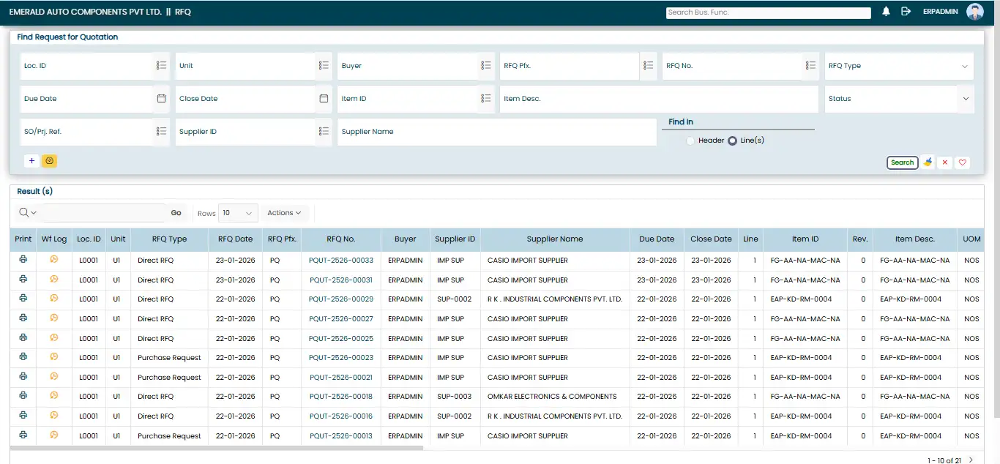
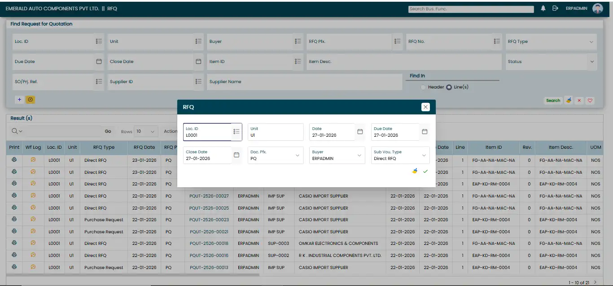
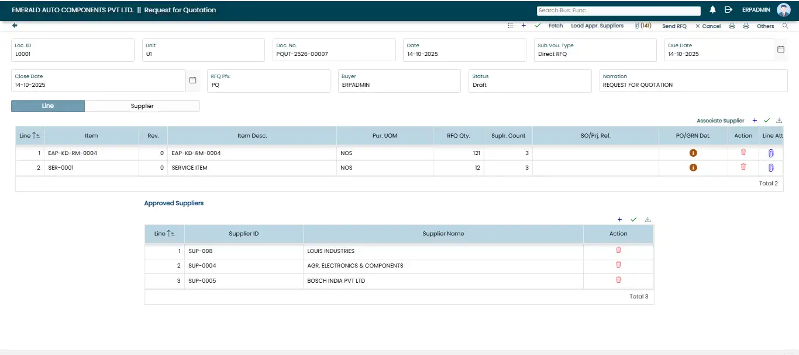
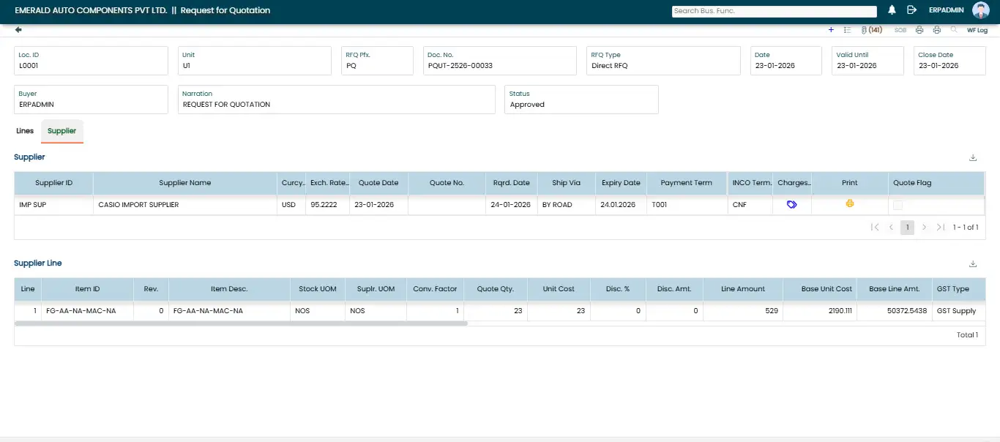
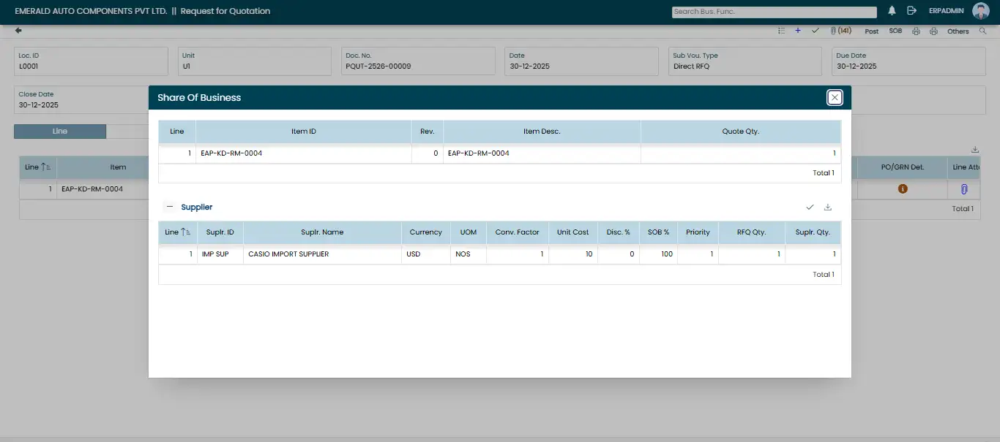
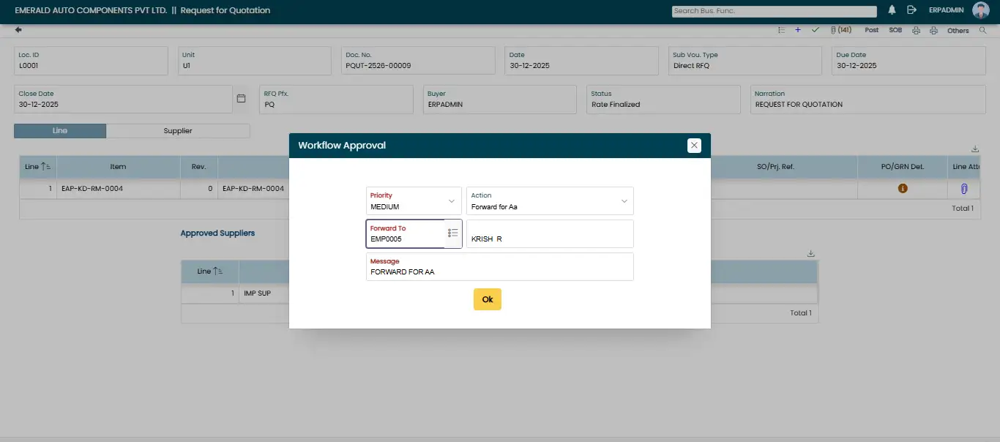
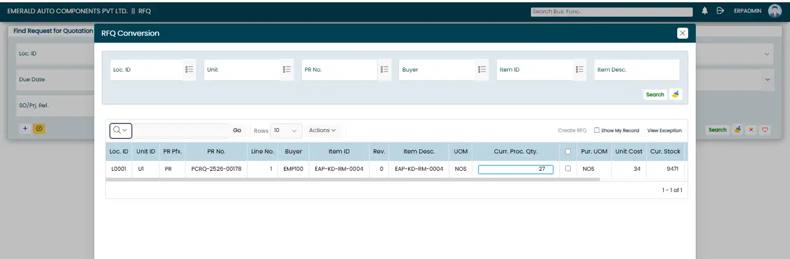

<div data-category="Purchase Order" data-title="Request for Quotation" data-updated="December 01, 2025" data-contributors="RoadmapIT" data-breadcrumb="Home,Purchase Order,Request for Quotation">
  <div class="page-content">
    <p>A Request for Quotation (RFQ) in Roadmap ERP is a formal document used to solicit competitive bids from suppliers for the procurement of goods or services. It specifies the requirements, quantities, and delivery terms needed by the organization. The RFQ facilitates comparison of supplier offers, enabling informed decision-making based on factors such as pricing, quality, and delivery schedules.</p>

    <h5>Navigation Path:</h5>
    <p class="fs-6">Supply Chain \ Purchasing \ Transactions \ RFQ</p>

    

    <ul style="list-style-type: none; align-content: center">
      <li class="mouse-icon">Search screen displays the list of Request for Quotation with the relevant details and its status.</li>
      <li class="mouse-icon">Click on search to filter all the records.</li>
      <li class="mouse-icon">User can filter the respective documents by entering the search parameters at the header.</li>
      <li class="mouse-icon">Using search, system displays the results relevant to the search parameters entered.</li>
      <li class="mouse-icon">On click; the corresponding transaction record will be displayed.</li>
      <li class="mouse-icon">Using <i class="bi bi-eraser text-secondary"></i> icon, entered search parameters can be cleared.</li>
      <li class="mouse-icon">To close the screen, use <i class="bi bi-x-lg text-danger"></i> icon.</li>
      <li class="mouse-icon">
        By Clicking the
        <i class="bi bi-plus fs-4 mx-2 text-primary"></i>
        Add button we can create new RFQ by entering all the mandatory fields displayed in the Add dialog.
      </li>
    </ul>

    

    <ul style="list-style-type: none; align-content: center">
      <li class="mouse-icon">Choose the unit location, Unit is auto populated.</li>
      <li class="mouse-icon">Select the Buyer.</li>
      <li class="mouse-icon">Enter/Select Doc Pfx.</li>
      <li class="mouse-icon">
        Click
        <i class="bi bi-check-lg fs-4 mx-1 text-success"></i>
        button Document navigate into Transaction screen.
      </li>
    </ul>

    

    <ul style="list-style-type: none; align-content: center">
      <li class="mouse-icon">Choose the items in the line details from the LOV.</li>
      <li class="mouse-icon">
        Click the Load Appr. suppliers button to load the suppliers associated with the items in PR or Click
        <i class="bi bi-plus fs-4 mx-2 text-primary"></i>
        to add suppliers.
      </li>
      <li class="mouse-icon">Click the Send RFQ button.</li>
      <li class="mouse-icon">Use cancel button to cancel the RFQ document.</li>
    </ul>

    

    <ul style="list-style-type: none; align-content: center">
      <li class="mouse-icon">Enter the Unit cost and save.</li>
      <li class="mouse-icon">Click “Finalize Rate” button and the rate will be finalized.</li>
    </ul>

    

    <ul style="list-style-type: none; align-content: center">
      <li class="mouse-icon">Click “SOB” button to define the priority to the supplier.</li>
      <li class="mouse-icon">Enter SOB% to the suppliers (with in the number of 100).</li>
      <li class="mouse-icon">Click post.</li>
    </ul>

    

    <ul style="list-style-type: none; align-content: center">
      <li class="mouse-icon">The Document will be sent for approval using the post button.</li>
      <li class="mouse-icon">The necessary work flow operations are done in the Workflow document control screen.</li>
      <li class="mouse-icon">To approve the document, Navigate to the Workflow approvals screen.</li>
      <li class="mouse-icon">
        Click on View details
        <i class="bi bi-info-circle text-primary"></i>
        to view the particular document.
      </li>
      <li class="mouse-icon">Screen navigate into query screen to check the details.</li>
      <li class="mouse-icon">After click the close button document navigate into Approval screen.</li>
      <li class="mouse-icon">Choose the Approval/forward/Return button field and click Process button required process performed.</li>
    </ul>

    <p>RFQ can be created both directly and from the pending PR screen, to create the RFQ from pending PR click “Create RFQ” Button.</p>

    

    <ul style="list-style-type: none; align-content: center">
      <li class="mouse-icon">Select the pending document.</li>
      <li class="mouse-icon">Click Create RFQ Button.</li>
    </ul>

    <p class="fst-italic">Note: The item will be displayed in Pending PR screen only if the item’s PR/SCO price basis is defined as RFQ in the item unit association</p>
  </div>
</div>
